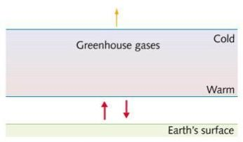
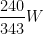
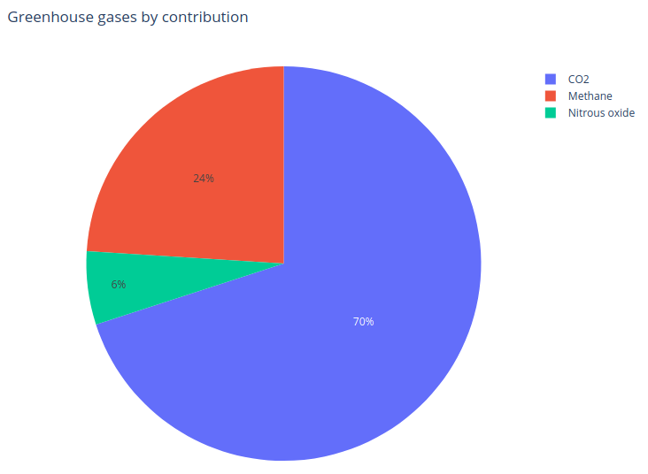
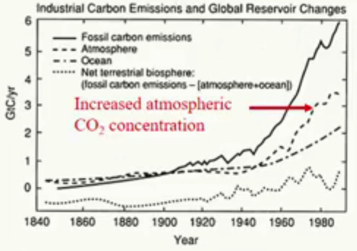
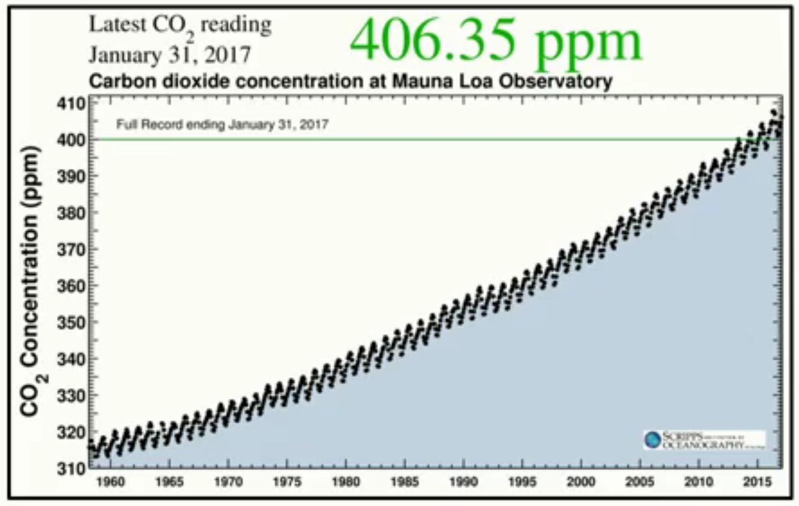
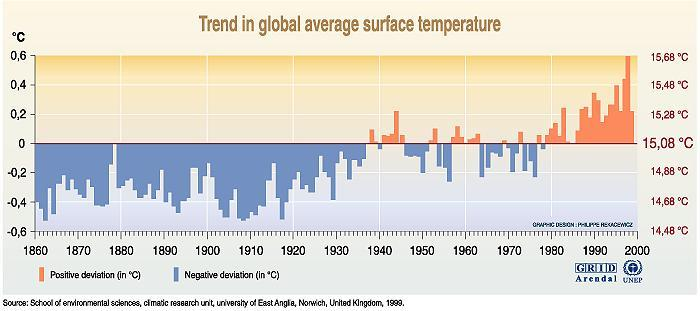
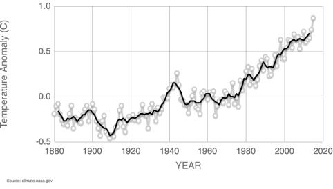

Politics of Climate Change
Created Tuesday 17 March 2020
@PATE @GEOGRAPHY @YEAR1
To what extent are human activities changing the @climate?
Evidence for climate change:
↑ land and sea temperature
We can only account for the warming trends if anthropogenic forcings are included
Indicators that the climate is warming:
- ↓ snow cover in the northen hemisphere
- ↓ @Arctic sea ice extent since 1900. Ice forms later, melts earlier, and covers less area
- ↑ ocean temperature
- @sea_level change
There are areas that are cooling, but the general trend is a warming one
Climate Change ≠ global warming
Global warming is an effect of climate change
Precipitation patterns, hurricanes, extreme weather, heatwaves and droughts change as well as temperature. @hazards
The Greenhouse effect causes a blanketing effect where warm greenhouse gases are trapped under colder air.
More methane and  causes more long wave radiation to be trapped
causes more long wave radiation to be trapped

The bottom of the Troposphere absorbs/ emits lots of long wave radiation where it is warm
More  means that more outgoing long-wave radiation is trapped
means that more outgoing long-wave radiation is trapped
The greenhouse effect is natural, but the enhanced greenhouse effect is not.
Greenhouse Gases
It has been known since 1896 that greenhouse gases warm the atmosphere by absorbing outgoing long wave radiation
Different gases have different concentrations and re-radiate different amounts of radiation
Heat is not trapped in the atmosphere (otherwise Earth would heat up forever)
 of insolation heats up the surface. 17% of that is emitted straight into space. 69% is absorbed by greenhouse gases and emitted to heat the atmosphere
Proportions

Water vapour is not included because it hardly changes and is considered 'natural', but this could change is cloud cover and rain patterns change
CFCs and Ozone are very hard to quantify
CO2
- 278,000 parts per billion pre industrial revolution
- 350,000 PPB in 1994
- 410 parts per million in 2018
Comes from deforestation, fossil fuels, and cement production
Levels regulated by the carbon cycle
Deposited into fossil record, but we are burning it faster than it can be locked away
⬇️The majority of carbon emissions go into the atmosphere.

The Mauna Loa observatory takes daily recordings⬇️

The oscillations happen because plants grow in the summer and absorb .
Methane
@methane is lower in concentration than but has 20x the warming potential
concentration has doubled since 1800
Organic compound produced naturally
Sources:
- Wetlands
- Paddy fields
- Agricultural emissions
- Biomass burning
- Anaerobic decomposition in landfills
- Fossil fuels
- Thawing permafrost
Sinks:
Destructive Reaction in the @atmosphere with (which produces and water vapour)
Soils can store some but not much
Historical Climate Change
Has always fluctuated significantly → it is hard to separate natural climate change from anthropogenic climate change.
Even significant recent changes
0.3-0.6° of warming since late 19th century
@Little_Ice_Age means that we should expect it to warm up at the end of a short glacial period.
.
Gradual warming since 1900, but there were unusually cold conditions throught the middle ages - the @Little_Ice_Age
Sceptics
üìñÔ∏è https://www.skepticalscience.com/argument.php
The media don't present it properly
Solutions
- @IPCC set up in 1988 to assess anthropogenic climate change, risks, mitigation, and adaptation.
- They changed their scenario forecasting, using best and worst case scenarios so that all scientists were using the same benchmark
- Data can also be used for @sea_level change
- Lots of @uncertainty in models with more uncertainty further in the future
- Use probability modelling to work out how bad something is vs how likely it is to happen.
- If we stopped releasing all now, we would still have warming for 1000 years because it takes that long for to leave
International policy
1992: Rio Earth Summit - first global approach but just an acknowledgement
1997: Kyoto Protocol: developed countries agree to cut emissions. No legally binding documents at all.
Paris 2015: made legally binding documents to keep climate below 2°. 185/ 197 countries signed it
EU 20-20-20 targets: ↓20% ↑20% renewables ↓ 20% energy use. Will move to 30% by 2030

We are not making good progress⬆️